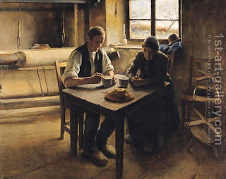

Shevuot (Oaths) 31 - Mnemonic: Defense, Ignoramus, Theft, Deceit
Occasionally the Talmud puts in mnemonics for those who are committing it to memory. They are also keys to a deeper meaning. This mnemonic is for the four of the thirteen teachings that can be derived from the phrase " Distance yourself from falsehood ," and here they are
* A judge should not defend his opinion about which he has doubts, merely to avoid embarrassment;
* He should not have an ignorant student assist him in judgment;
* He should not join another judge whom he knows to be a thief;
* If he has discerned that the witnesses are lying, he should not continue to judge, internally putting the blame on the witnesses;
* A student assisting a judge who sees an argument in favor of a poor man should not be silent about it;
* If a student sees his teacher making a mistake, he should not wait till the teacher concludes the judgment, for the student to demolish it and get honor;
* If a teacher tells his student "You know me, I won't lie. Someone owes me a maneh ($5,000), but I have only one witness - please be the second one" - the student should not be a witness;
* Six more...
Art: Andre Collin - Poor People